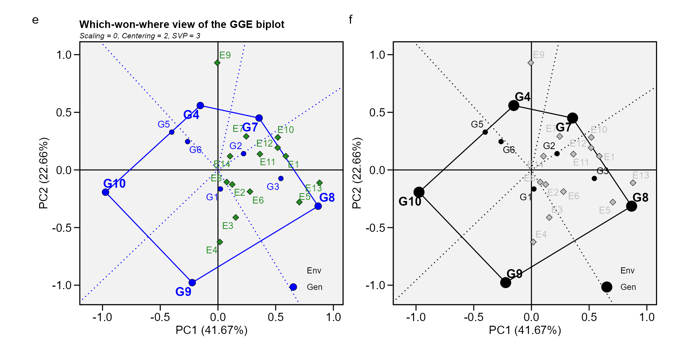
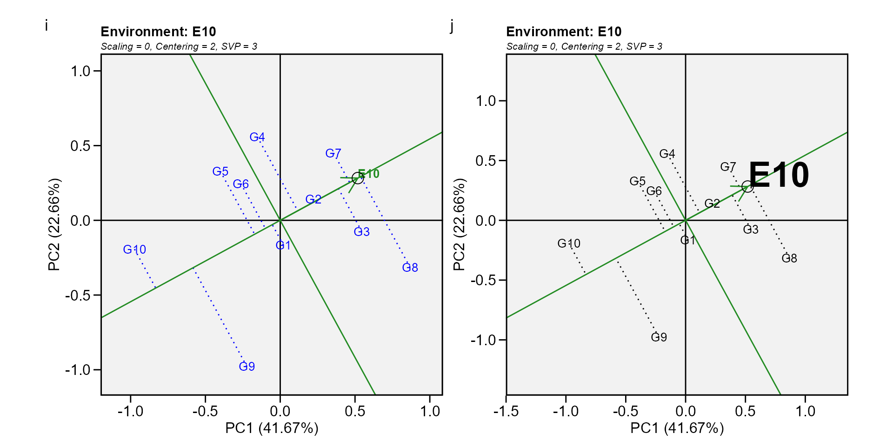
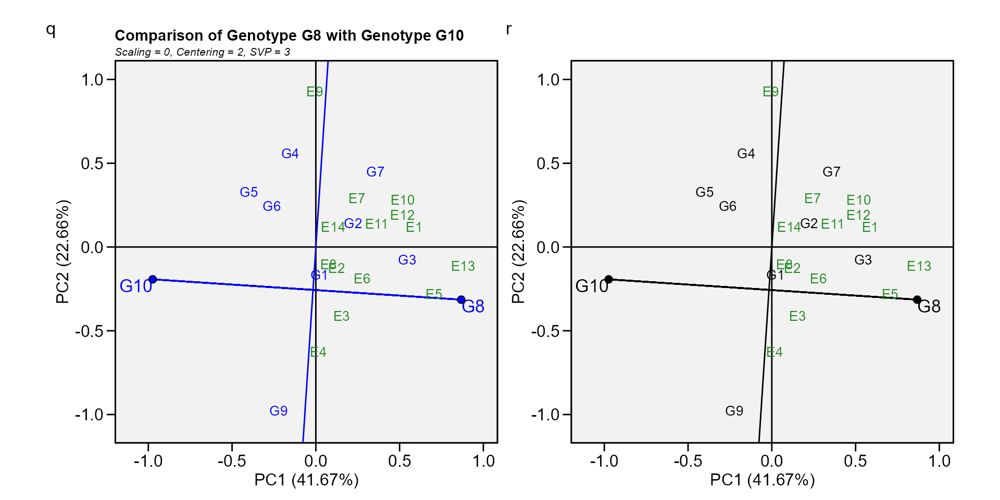

Analyzing multienvironment trials using GGE
Tiago Olivoto
2024-11-20
Source:vignettes/vignettes_gge.Rmd
vignettes_gge.RmdGetting started
Genotype plus Genotype-vs-Environment interaction (GGE) model has been widely used to genotype evaluation and mega-environment identification in multi-environment trials (MET). This model considers a GGE (i.e., G + GE) biplot, which is constructed by the first two symmetrically scaled principal components (PC1 and PC2) derived from singular value decomposition of environment-centered MET data. The GGE biplot graphically displays G plus GE of a MET in a way that facilitates visual genotype evaluation and mega-environment identification (W. Yan et al. 2007)
In this section, we will use the data in data_ge. For
more information, please, see ?data_ge. Other data sets can
be used provided that the following columns are in the dataset:
environment, genotype, block/replicate and response variable(s).
The GGE model
The mean yield of genotype i in environment j is commonly described by a general linear model
where is the mean yield of genotype i in environment j, being g and e the numbers of genotypes and environments, respectively; is the grand mean; is the main effect of the genotype i; is the main effect of the environment j, and is the interaction effect between genotype i and environment j. Subjecting the to Singular Value Decomposition (SVD) results in the AMMI model. The deletion of allows the variation explained by this term to be absorbed into the term. In the Genotype plus Genotype-vs-Environment interaction (GGE) model the term is is deleted from the above model and then the environment-centered data matrix, , is subjected to SVD (W. Yan et al. 2007; Weikai. Yan and Kang 2003). Explicitly, we have
where ; being the kth eigenvalue from the SVD (), with ; is the the singular value partition factor for the Principal Component (PC) k; and are the PC scores for genotype i and environment j, respectively.
The function gge() is used to produce a GGE model.
According to Weikai. Yan and Kang (2003), the function supports four methods
of data centering, two methods of data scaling and three options for
singular value partitioning:
Centering methods available
-
0or"none"for no centering; -
1or"global"for global centered (E+G+GE); -
2or"environment"(default), for environment-centered (G+GE); -
3or"double"for double centred (GE). A biplot cannot be produced with models produced without centering.
Scaling methods available
-
0or"none"(default) for no scaling; -
1or"sd"where each value is divided by the standard deviation of its corresponding environment (column). This will put all testers roughly the same range of values.
Singular Value Partitioning methods available
-
1or"genotype"The singular value is entirely partitioned into the genotype eigenvectors, also called row metric preserving; -
2or"environment"(default) the singular value is entirely partitioned into the environment eigenvectors, also called column metric preserving; -
3or"symmetrical"The singular value is symmetrically partitioned into the genotype and the environment eigenvectors This SVP is most often used in AMMI analysis and other biplot analysis, but it is not ideal for visualizing either the relationship among entries or that among the testers.
A numerical example
Fitting the GGE model
To fit the GGE model we will use the data in data_ge,
which contains data for grain yield evaluated in 10 genotypes conducted
in 14 environments. First of all, let’s inspect this data for possible
problems.
inspect(data_ge)
# # A tibble: 5 × 10
# Variable Class Missing Levels Valid_n Min Median Max Outlier Text
# <chr> <chr> <chr> <chr> <int> <dbl> <dbl> <dbl> <dbl> <lgl>
# 1 ENV factor No 14 420 NA NA NA NA NA
# 2 GEN factor No 10 420 NA NA NA NA NA
# 3 REP factor No 3 420 NA NA NA NA NA
# 4 GY numeric No - 420 0.67 2.61 5.09 0 NA
# 5 HM numeric No - 420 38 48 58 0 NA
# No issues detected while inspecting data.The GGE model is fitted with the function gge(). This
function produces a GGE model using a data frame containing at least the
columns for genotypes, environments and the response variable(s).
gge_model <- gge(data_ge, ENV, GEN, GY)The model above was fitted considering (i) column metric preserving
(where the singular value is entirely partitioned into the environment
eigenvectors); (ii) environment centered (the biplot will contain a
mixed information of G + GEI); and no scaling method. To change these
default settings, use the arguments svp,
centering, and scaling, respectively. Please,
note that in the second example the argument table was set
to TRUE to indicate that the input data is a two-way
table.
Visualizing the Biplot
The generic function plot() is used to generate a biplot
using as input a fitted model of class gge. The type of
biplot is chosen by the argument type in the function. Ten
biplots type are available according to Weikai.
Yan and Kang (2003).
-
type = 1A basic biplot. -
type = 2Mean performance vs. stability. -
type = 3Which-won-where. -
type = 4Discriminativeness vs. representativeness. -
type = 5Examine an environment. -
type = 6Ranking environments. -
type = 7Examine a genotype. -
type = 8Ranking genotypes -
type = 9Compare two genotypes. -
type = 10Relationship among environments.
In this material, for each biplot type, two graphics are produced. One with the default settings and the other to show some graphical options of the function.
Biplot type 1: A basic biplot
This is the default setting in the function plot, thus, this biplot
is produced by just calling plot(model), as shown
below.
a <- plot(gge_model)
b <- plot(gge_model,
col.gen = "orange",
size.text.env = 2,
plot_theme = theme_metan(grid = "both"))
arrange_ggplot(a, b, tag_levels = "a")Biplot type 2: Mean performance vs. stability
In this biplot, the visualization of the mean and stability of genotypes is achieved by drawing an average environment coordinate (AEC) on the genotype-focused biplot. First, an average environment, represented by the small circle, is defined by the mean PC1 and PC2 scores of the environments. The line that passes through the biplot origin and the AEC may be called the average. The projections of genotype markers onto this axis should, therefore, approximate the mean yield of the genotypes. Thus, the G8 was clearly the highest-yielding genotype, on average.
The AEC ordinate is the line that passes through the biplot origin and is perpendicular to the AEC abscissa. Therefore, if the AEC abscissa represents the G, the AEC ordinate must approximate the GEI associated with each genotype, which is a measure of variability or instability of the genotypes (W. Yan et al. 2007). A greater projection onto the AEC ordinate, regardless of the direction, means greater instability. In our example, G3 was found to be the most stable and the second most productive genotype, while G9 had great instability.
gge_model <- gge(data_ge, ENV, GEN, GY, svp = "genotype")
c <- plot(gge_model, type = 2)
d <- plot(gge_model,
type = 2,
col.gen = "black",
col.env = "red",
axis_expand = 1.5,
plot_theme = theme_metan_minimal())
arrange_ggplot(c, d, tag_levels = list(c("c", "d")))Biplot type 3: Which-won-where
In this biplot a polygon is drawn joining the genotypes (G7, G8, G9, G10, and G4) that are located farthest from the biplot origin so that all other genotypes are contained in the polygon. The vertex genotypes have the longest vectors, in their respective directions, which is a measure of responsiveness to environments. The vertex genotypes are, therefore, among the most responsive genotypes; all other genotypes are less responsive in their respective directions. A genotype located at the origin would rank the same in all environments and is not at all responsive to the environments.
The perpendicular lines to the sides of the polygon divide the biplot into sectors. Each sector has a vertex genotype. For example, the sector with the vertex genotype G4 may be referred to as the G4 sector; and one environment (E9), fell in this sector. As a rule, the vertex genotype is the highest-yielding genotype in all environments that share the sector with it (W. Yan et al. 2007). In this case, G4 was the highest-yielding in E9, as shown in the two-way table above.
gge_model <- gge(data_ge, ENV, GEN, GY, svp = "symmetrical")
e <- plot(gge_model, type = 3)
f <- plot(gge_model,
type = 3,
size.shape.win = 5,
large_label = 6,
col.gen = "black",
col.env = "gray",
title = FALSE)
arrange_ggplot(e, f, tag_levels = list(c("e", "f")))
Biplot type 4: Discriminativeness vs. representativeness
g <- plot(gge_model, type = 4)
h <- plot(gge_model,
type = 4,
plot_theme = theme_metan_minimal())
arrange_ggplot(g, h, tag_levels = list(c("g", "h")))Biplot type 5: Examine an environment
Identifying genotypes most adapted to an environment can be easily achieved via a GGE biplot. For example, to visualize the performance of different genotypes in a given environment, e.g., E10, simply draw a line that passes through the biplot origin and the marker of E10. The genotypes can be ranked according to their projections onto the E10 axis based on their performance in E10, in the direction pointed by the arrow. In our example, at E10, the highest-yielding genotype G8, and the lowest-yielding genotype was G10, and the order of the genotypes were G8 > G7 > G3 > G2 > G4 > G1 > G6 > G5 > G9 > G10.
gge_model <- gge(data_ge, ENV, GEN, GY, svp = "symmetrical")
i <- plot(gge_model, type = 5, sel_env = "E10")
j <- plot(gge_model,
type = 5,
sel_env = "E10",
col.gen = "black",
col.env = "black",
size.text.env = 10,
axis_expand = 1.5)
arrange_ggplot(i, j, tag_levels = list(c("i", "j")))
Biplot type 6: Ranking environments
In this biplot the “ideal” environment is used as the center of a set of concentric lines that serve as a ruler to measure the distance between an environment and the ideal environment. since the main focus in this biplot is environments, then, the singular value partition used is “environment” (default). It can be seen that E13 is the closest to the ideal environment, and, therefore, is most desirable of all 14 environments. E4 and E9 were the least desirable test environments.
gge_model <- gge(data_ge, ENV, GEN, GY)
k <- plot(gge_model, type = 6)
l <- plot(gge_model,
type = 6,
col.gen = "black",
col.env = "black",
col.circle = "red",
col.alpha.circle = 0.5,
size.text.env = 10,
axis_expand = 1.5,
plot_theme = theme_metan(color.background = "white"))
arrange_ggplot(k, l, tag_levels = list(c("k", "l")))Biplot type 7: Examine a genotype
Analogous to visualizing genotype performances in a given environment (biplot 5) visualization of the mean and stability of genotypes is achieved by drawing an average environment coordinate (AEC) on the genotype-focused biplot (W. Yan et al. 2007).
gge_model <- gge(data_ge, ENV, GEN, GY, svp = "genotype")
m <- plot(gge_model, type = 7, sel_gen = "G8")
n <- plot(gge_model,
type = 7,
sel_gen = "G8",
col.gen = "black",
col.env = "black",
size.text.env = 10,
axis_expand = 1.5,
plot_theme = theme_metan(grid = "both"))
arrange_ggplot(m, n, tag_levels = list(c("m", "n")))Biplot type 8: Ranking genotypes
This biplot compares all genotypes with the “ideal” genotype The ideal genotype, represented by the small circle with an arrow pointing to it, is defined as having the highest yield in all environments. That is, it has the highest mean yield and is absolutely stable. The genotypes are ranked based on their distance from the ideal genotype (W. Yan et al. 2007). In our example, G3 and G8 were found to outperform the other genotypes.
o <- plot(gge_model, type = 8)
p <- plot(gge_model,
type = 8,
col.gen = "black",
col.env = "gray",
size.text.gen = 6,
plot_theme = theme_metan_minimal())
arrange_ggplot(o, p, tag_levels = list(c("o", "p")))Biplot type 9: Compare two genotypes
To compare two genotypes, for example, G10 and G8, draw a connector line to connect them and draw a perpendicular line that passes through the biplot origin and is perpendicular to the connector line. We see one environment, E9, is on the same side of the perpendicular line as G10, and the other 13 environments are on the other side of the perpendicular line, together with G8. This indicates that G10 yielded more than G8 in E9, but G8. yielded more than G10 in the other 13 environments (W. Yan et al. 2007).
gge_model <- gge(data_ge, ENV, GEN, GY, svp = "symmetrical")
q <- plot(gge_model, type = 9, sel_gen1 = "G8", sel_gen2 = "G10")
r <- plot(gge_model,
type = 9,
sel_gen1 = "G8",
sel_gen2 = "G10",
col.gen = "black",
title = FALSE)
arrange_ggplot(q, r, tag_levels = list(c("q", "r")))